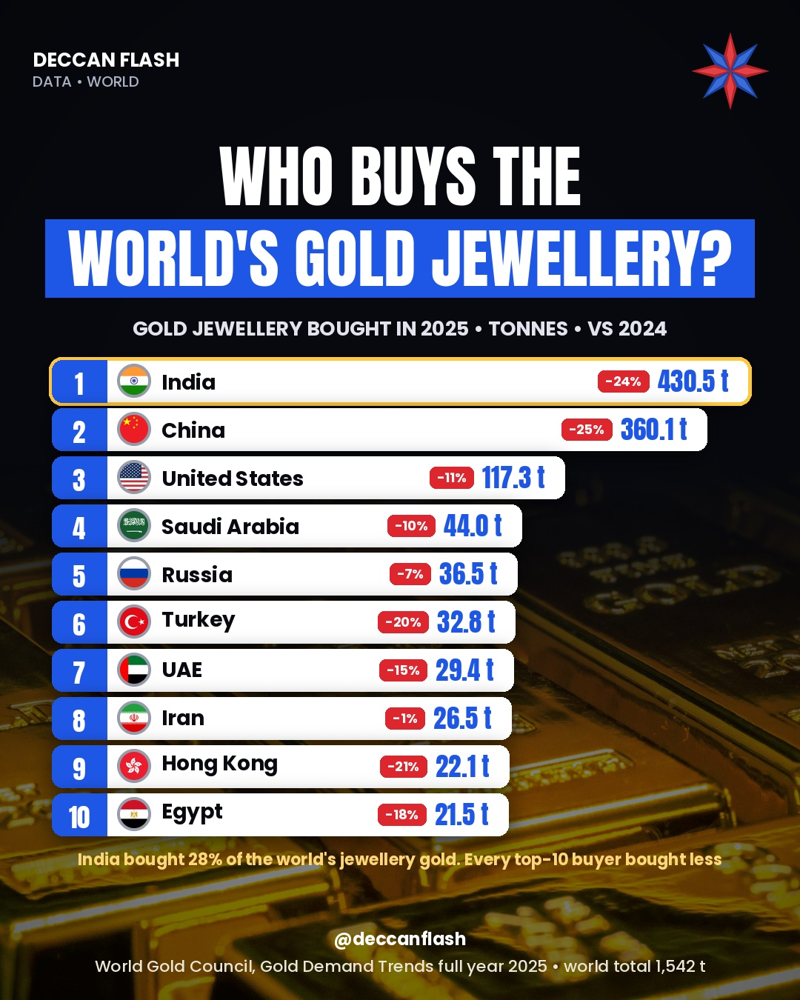

Gold · World
Who buys the world's gold jewellery?
430.5 tonnesgold jewellery bought in India in 2025, the most in the world
India bought 28% of the world's jewellery gold in 2025, ahead of China. Together the two bought just over half of the world total of 1,542 tonnes. With record prices, every top-10 country bought less than in 2024.
Gold jewellery demand by country, 2025
Tonnes. Top 10 countries. India is highlighted.
The ranking
| # | Country | 2024 | 2025 | Change |
|---|---|---|---|---|
| 1 | India | 563.4 t | 430.5 t | −24% |
| 2 | China | 479.1 t | 360.1 t | −25% |
| 3 | United States | 131.9 t | 117.3 t | −11% |
| 4 | Saudi Arabia | 49.1 t | 44.0 t | −10% |
| 5 | Russia | 39.4 t | 36.5 t | −7% |
| 6 | Turkey | 40.9 t | 32.8 t | −20% |
| 7 | UAE | 34.7 t | 29.4 t | −15% |
| 8 | Iran | 26.7 t | 26.5 t | −1% |
| 9 | Hong Kong | 27.9 t | 22.1 t | −21% |
| 10 | Egypt | 26.1 t | 21.5 t | −18% |
| – | World | – | 1,542.3 t | −18% |
Volume fell, but spending rose: Indians spent a record of about $49 billion on gold jewellery in 2025, and the world about $172 billion.

Quick answers
Which country buys the most gold jewellery?
India. It bought 430.5 tonnes of gold jewellery in 2025, ahead of China with 360.1 tonnes, according to the World Gold Council.
Did India buy less gold jewellery in 2025?
Yes. India's jewellery demand fell 24% from 563.4 tonnes in 2024 as gold prices hit records, but the money spent rose to a record of about $49 billion.
How much gold jewellery did the world buy in 2025?
1,542 tonnes, an 18% fall and a five-year low.